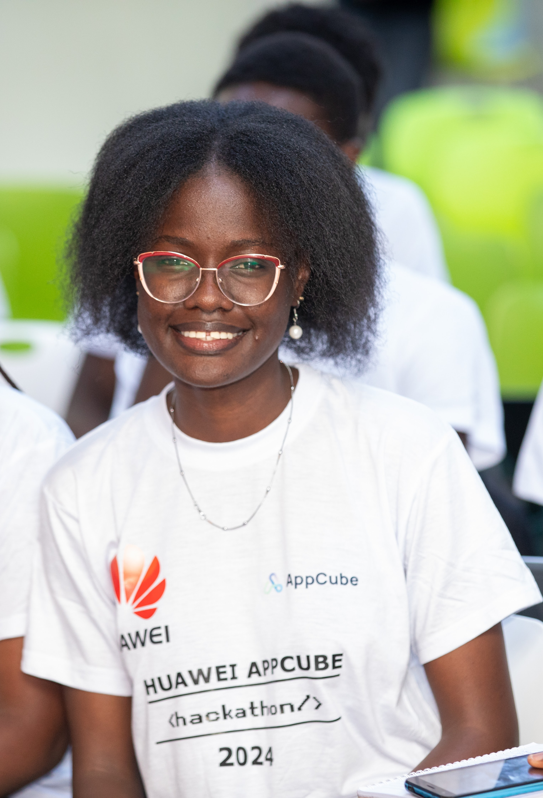

I'm Esther Oyoo, a 1st Year Mathematics and Computer Science student from Kenyatta University.
With me, comes a promise to deliver and a spirt of excellence!
I am a certified AWS cloud practitioner and an AWS re/Start graduate possessing skills in python programming, Linux OS, Databases, Security, Networking as well as Amazon Web Services. Boasting hands on skills in managing and using AWS services, I have received rigorous training on how to help companies migrate to the cloud, and fully leverage cloud services effectively. My drive for technology-driven solutions and sustainable development is fueled by my achievements in Model United Nations, where we strive for the UN SDGs with a mission to weave innovation with community impact.
As a new techie, I would love to receive this scholarship in order to further my skills thus boosting my career in tech. Technology is intertwined, with one technology being tied to another. Learning fullstack web development will enable me to leverage the skills I will have gained and the skills I currently possess. Having participated in a number of hackathons and tech competitions since 2021, I have a number of great project proposals which I would like to actualize and finally implement. With this scholarship, I will not only gain numerous skills but also be able to develop websites that have a lasting impact on my community and the world as a whole.
My favorite website is Pinterest because of the boundless creativity it fosters. On pinterest, users can freely express themselves, showcasing their artistic talents and providing inspiration to others. In addition, it has a friendly user interface, supports a variety of media and uses advanced algorithms to recommend content based on what you interact with most.
Link to Pinterest!